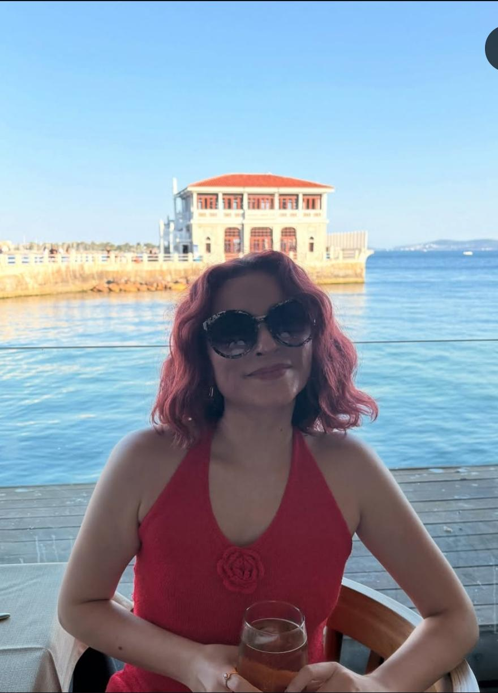

Hoşgeldinizzz 🎉
Her kelimeye tıklayarak seslendirimini dinle
Cümleleri dinle ve tekrarlamayı dene
Kelimeyi doğru sıraya sürükle
Sorulara cevap ver
Gizli kelimeyi doğru seçerek bulunuz
Her kelimeye tıklayarak seslendirimini dinle
Cümleleri dinle ve tekrarlamayı dene
Kelimeyi doğru sıraya sürükle
Sorulara cevap ver
İtalyanca kelimeye uygun Türkçe çevirişi seç